Modul Integrasi Ekonomi
Pendalaman Materi Mekanisme Pasar & Otoritas Sektor Keuangan Nasional
Modul interaktif ini merangkum materi esensial ekonomi semester ganjil/genap kelas X secara terfokus. Silakan klik menu di samping kiri untuk menjelajahi bab yang diinginkan secara instan.
Cakupan Pembelajaran: Teori pembentukan harga, matematika elastisitas, regulasi lembaga keuangan perbankan, pengawasan OJK, tata kelola risiko asuransi, serta fungsi operasional IKNB (Industri Keuangan Non-Bank).
Mekanisme Pasar: Permintaan & Penawaran
A. Teori Permintaan (Demand)
Permintaan adalah jumlah barang/jasa yang ingin dan mampu dibeli oleh konsumen pada berbagai tingkat harga dan dalam periode waktu tertentu.
- Hukum Permintaan: Hubungan berbanding terbalik. Jika harga suatu barang naik (P↑), maka jumlah barang yang diminta akan turun (Q↓), dengan syarat ceteris paribus.
B. Teori Penawaran (Supply)
Penawaran adalah jumlah barang/jasa yang ditawarkan atau dijual oleh produsen pada berbagai tingkat harga.
- Hukum Penawaran: Hubungan berbanding lurus. Jika harga suatu barang naik (P↑), maka jumlah barang yang ditawarkan produsen akan ikut naik (Q↑), ceteris paribus.
C. Harga Keseimbangan (Ekuilibrium)
Kondisi di mana kekuatan permintaan bertemu dengan kekuatan penawaran di pasar secara seimbang. Terjadi saat Qd = Qs atau Pd = Ps.
Rumus-rumus nya:

Teori Elastisitas Permintaan & Penawaran
Elastisitas adalah derajat kepekaan perubahan jumlah barang yang diminta atau ditawarkan akibat adanya perubahan harga barang tersebut.
Jenis-Jenis Koefisien Elastisitas
| Nilai Koefisien | Sifat Elastisitas | Contoh |
|---|---|---|
| Es > 1 | Elastis | Pakaian Bermerek: Jika harga tas atau sepatu mewah naik 20%, konsumen dengan mudah menunda pembelian atau beralih ke merek lain, sehingga penjualannya turun lebih dari 20%. |
| Es < 1 | Inelastis | Beras atau Makanan Pokok: Jika harga beras naik 15%, masyarakat tetap akan membelinya karena merupakan kebutuhan makan sehari-hari, sehingga konsumsinya hanya turun sedikit (misal 2%). |
| Es = 1 | Unitary | Produk Fashion Tren Musiman: Penjual menurunkan harga baju model lama sebesar 20% untuk menghabiskan stok, dan jumlah baju yang terjual meningkat tepat 20%. |
| Es = ∞ | Elastis Sempurna | Bahan Bakar Minyak (BBM) Subsidi: Pada tingkat harga yang sudah dipatok pemerintah, masyarakat akan membeli berapa pun kuantitas yang tersedia. |
| Es = 0 | Inelastis Sempurna | Obat-obatan Penyelamat Nyawa (seperti Insulin): Penderita diabetes tetap membutuhkan dosis insulin yang sama setiap bulan, tidak peduli harganya melonjak tinggi atau turun drastis. |
1. Elastisitas harga Permintaan
Elastisitas harga Permintaan adalah persentase perubahan jumlah barang yang diminta akibat terjadinya perubahan harga itu sendiri
rumus Elastisitas Permintaan
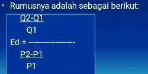
Contoh soal & cara jawab
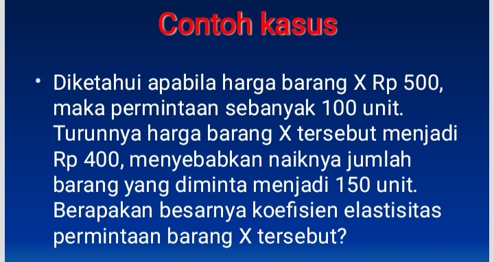
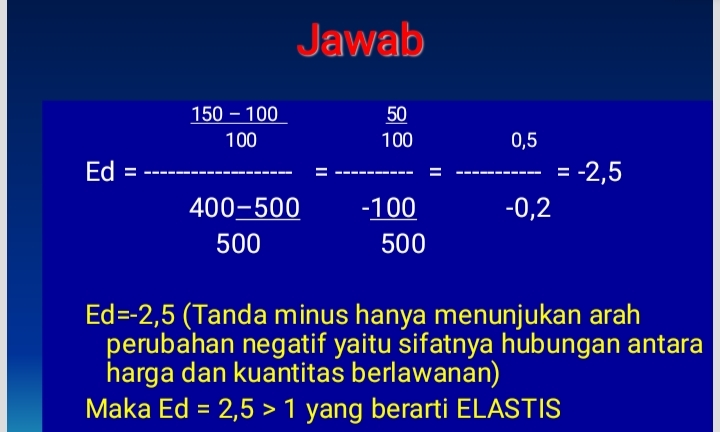
2. Elastisitas Penawaran
Elastisitas Penawaran adalah persentase perubahan harga barang yang ditawarkan akibat terjadinya perubahan harga itu sendiri
rumus Elastisitas Penawaran
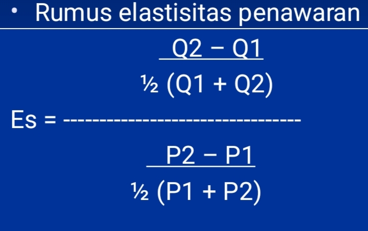
contoh soal & cara jawab
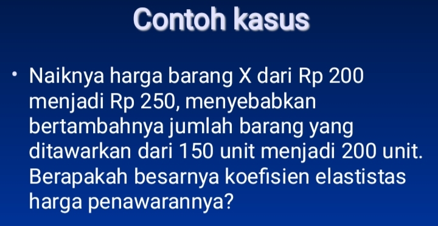
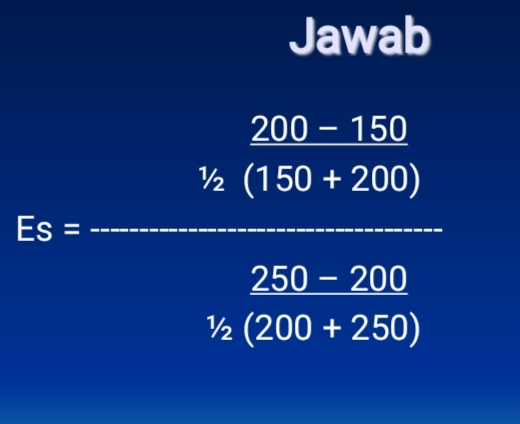
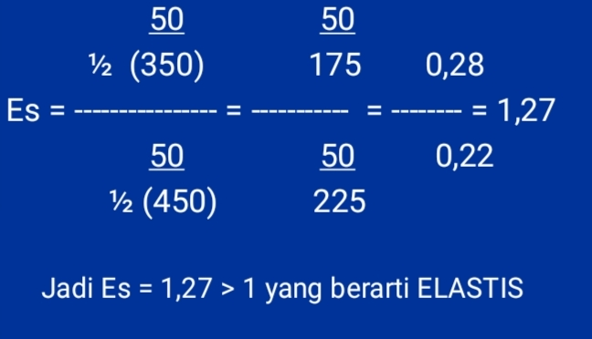
3. Elastisitas silang
Elastisitas silang adalah persentase perubahan jumlah barang yang diminta akibat terjadinya perubahan harga barang lain
rumus Elastisitas silang
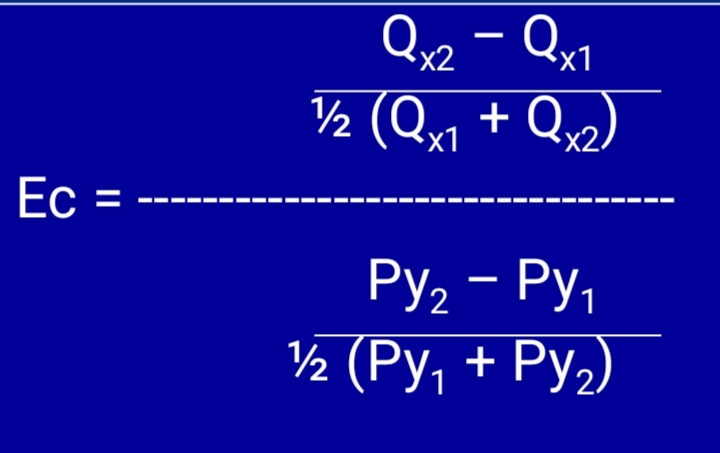
contoh soal & cara jawab
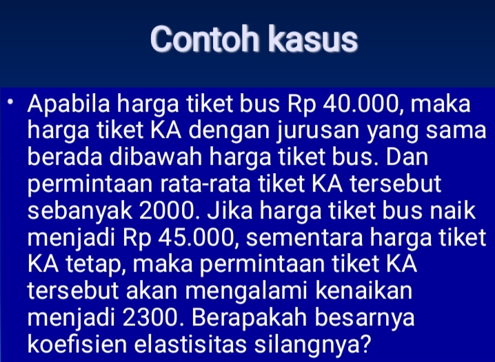
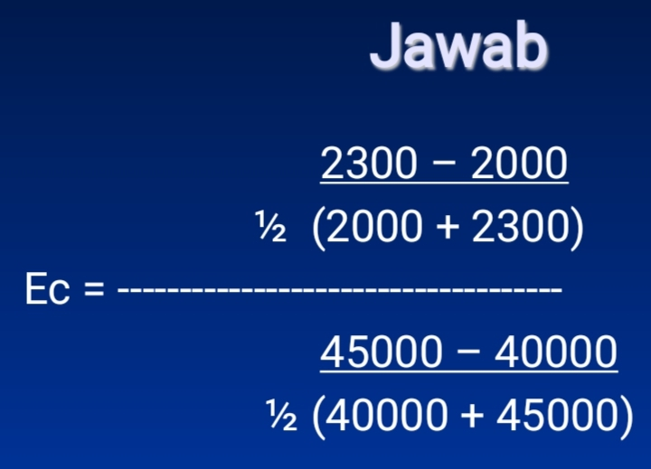
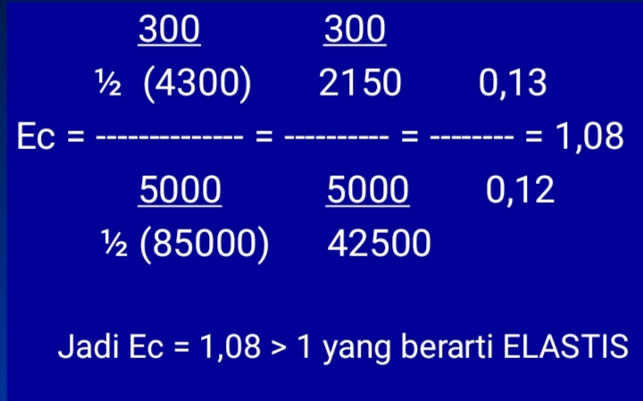
4. Elastisitas pendapatan
Elastisitas pendapatan adalah persentase perubahan kuantitas barang akibat terjadinya perubahan pendapatan
rumus Elastisitas pendapatan
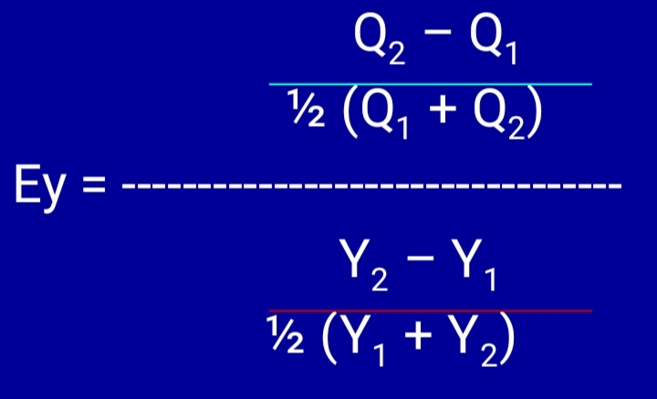
contoh soal & cara jawab
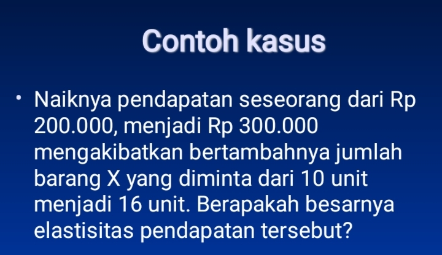
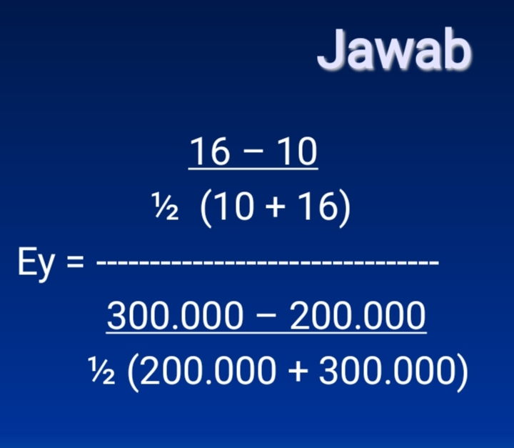
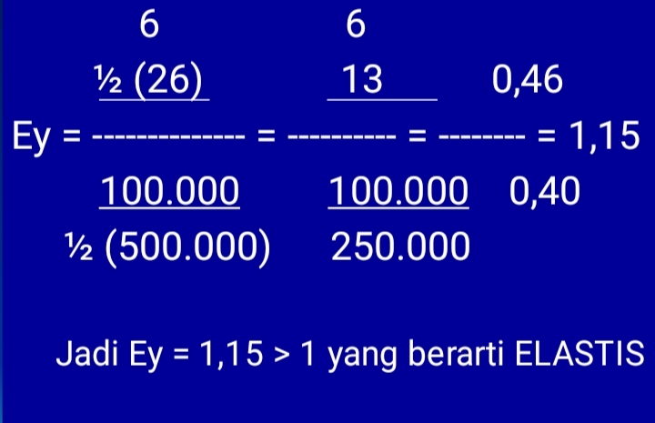
Sistem Perbankan di Indonesia
Bank adalah badan usaha yang menghimpun dana dari masyarakat dalam bentuk simpanan dan menyalurkannya kembali dalam bentuk kredit.
Jenis-Jenis Bank
1. Bank Sentral (Bank Indonesia)
Lembaga negara independen yang bertugas mencapai dan memelihara kestabilan nilai rupiah melalui kebijakan moneter.
2. Bank Umum (Komersial)
Bank yang melaksanakan kegiatan usaha konvensional atau syariah yang memberikan jasa dalam lalu lintas pembayaran.
3. Bank Perkreditan Rakyat (BPR)
Bank yang menerima simpanan hanya dalam bentuk deposito berjangka, tabungan, atau bentuk lainnya, namun tidak memberikan jasa dalam lalu lintas pembayaran.
Sistem dan Alat Pembayaran
Prinsip Usaha Bank
Otoritas Jasa Keuangan (OJK)
OJK adalah lembaga negara independen yang memiliki fungsi, tugas, dan wewenang pengaturan, pengawasan, pemeriksaan, dan penyidikan di sektor jasa keuangan.
Tujuan Utama OJK
- Sektor jasa keuangan terselenggara secara teratur, adil, transparan, dan akuntabel.
- Melindungi kepentingan konsumen dari kejahatan finansial (investasi bodong/pinjol ilegal).
- Menjaga stabilitas sektor keuangan secara terintegrasi.
- Memastikan pinjaman online (pinjol) terdaftar dan berizin agar legal. Layanan Utama OJK
- Kontak OJK 157: Layanan konsumen untuk informasi dan pengaduan melalui telepon 157 atau WhatsApp 081157157157.
- SLIK (Sistem Layanan Informasi Keuangan): Layanan informasi debitur (dulu BI Checking) yang dapat diakses secara online.
- Cek Legalitas: Mengecek legalitas pinjol atau perusahaan keuangan melalui situs www.ojk.go.id
Industri Perasuransian
Asuransi adalah perjanjian antara perusahaan asuransi (penanggung) dan pemegang polis (tertanggung) untuk memberikan penggantian atas risiko kerugian.
Unsur-Unsur Utama Asuransi
- Premi: Uang iuran yang wajib dibayarkan oleh nasabah kepada perusahaan asuransi setiap bulan atau setiap tahun.
- Polis asuransi: Surat atau dokumen perjanjian tertulis yang sah dan mengikat antara penanggung dan tertanggung.
- Klaim: Pengajuan resmi dari nasabah kepada perusahaan asuransi untuk meminta pembayaran ganti rugi atas risiko yang terjadi sesuai isi polis.
Fungsi Asuransi
- Fungsi Primer (Utama): Mengalihkan risiko (risk transfer), membagi risiko secara adil, dan memberikan kepastian finansial dari ketidakpastian masa depan.
- Fungsi Sekunder: Mendorong pertumbuhan usaha, mencegah kerugian ekonomi, serta mengumpulkan dana masyarakat untuk diinvestasikan kembali ke perekonomian
Jenis-Jenis Asuransi
- Berdasarkan Pengelolaan Dana: Asuransi Konvensional: Menggunakan prinsip jual beli risiko berbasis bunga/investasi umum. Asuransi Syariah: Menggunakan prinsip tolong-menolong (ta'awun) dan hibah (tabarru') tanpa unsur judi, ketidakpastian, atau riba
- Berdasarkan Tujuan Operasional: Asuransi Komersial: Dijalankan oleh perusahaan swasta/BUMN demi mencari keuntungan finansial. Asuransi Sosial: Disediakan oleh pemerintah untuk jaminan sosial seluruh masyarakat (contoh: BPJS Kesehatan dan BPJS Ketenagakerjaan).
- Berdasarkan Objek yang Dijamin: Asuransi Jiwa: Menanggung risiko finansial akibat kematian atau kelangsungan hidup seseorang. Asuransi Umum/Kerugian: Menanggung kerusakan fisik harta benda (contoh: asuransi kebakaran rumah, kendaraan bermotor).
Prinsip Dasar Asuransi
Perusahaan asuransi hanya akan membayar klaim jika memenuhi prinsip ekonomi berikut:
- Insurable Interest: Nasabah memiliki kepentingan keuangan langsung atas objek yang diasuransikan (misal: rumah milik sendiri, bukan milik tetangga).
- Utmost Good Faith: Kedua belah pihak harus jujur dan terbuka dalam memberikan informasi dokumen tanpa ada yang disembunyikan.
- Indemnity: Mekanisme ganti rugi disesuaikan dengan nilai kerugian riil, tidak boleh mencari keuntungan dari asuransi.
Lembaga Keuangan Bukan Bank (LKBB)
LKBB adalah badan usaha yang melakukan kegiatan di bidang keuangan dengan menghimpun dana dari masyarakat dan menyalurkannya kembali, tetapi tidak diperbolehkan menerima simpanan dalam bentuk giro, tabungan, dan deposito seperti bank umum. Semua LKBB di Indonesia diawasi langsung oleh Otoritas Jasa Keuangan (OJK).
- Contoh: PT Jasa Raharja, BPJS Kesehatan, BPJS Ketenagakerjaan, dan perusahaan asuransi swasta. 2. Pegadaian (Perusahaan Pergadaian)
- Fungsi: Memberikan pinjaman dana tunai kepada masyarakat dengan jaminan barang bergerak (gadai) untuk mencegah masyarakat terjerat rentenir.
- Slogan Terkenal: "Mengatasi Masalah Tanpa Masalah.
- Contoh: PT Pegadaian (Persero). 3. Dana Pensiun
- Fungsi: Menghimpun dana dari iuran gaji karyawan selama masa kerja, lalu mengembalikannya dalam bentuk tunjangan bulanan saat karyawan tersebut pensiun
- Contoh: PT Taspen (untuk PNS), PT Asabri (untuk TNI/Polri), dan BPJS Ketenagakerjaan Jaminan Hari Tua (JHT) 4. Perusahaan Pembiayaan (Leasing)
- Fungsi: Menyediakan pembiayaan barang modal atau barang konsumsi kepada nasabah yang ingin membeli secara mengangsur/kredit.
- Contoh: PT Adira Dinamika Multi Finance, PT Federal International Finance (FIF). 5. Perusahaan Modal Ventura (Ventura Capital)
- Fungsi: Memberikan investasi atau penyertaan modal kepada perusahaan rintisan (startup) atau UMKM yang potensial tetapi kekurangan modal.
- Karakteristik: Kemitraan bersifat sementara sampai perusahaan tersebut mandiri. 6. Koperasi Simpan Pinjam (KSP)
- Fungsi: Menghimpun dana dan memberikan pinjaman khusus untuk anggota koperasi berdasarkan asas kekeluargaan dan gotong royong.
Jenis-Jenis LKBB beserta Fungsinya
1. Perusahaan AsuransiFungsi: Mengalihkan dan membagikan risiko finansial yang mungkin terjadi di masa depan melalui pembayaran premiperbedaan bank dengan LKBB
| Karakteristik | bank | klbb |
|---|---|---|
| Penghimpunan Dana | Langsung (Giro, Tabungan, Deposito) | Tidak langsung (Premi, Iuran, Modal sendiri, Penerbitan surat berharga) |
| Penyaluran Dana | Kredit modal kerja, investasi, dan konsumsi | Tujuan khusus (Modal ventura, Kredit barang, Jaminan gadai, Proteksi risiko |
| Kemampuan Cetak Uang | Dapat menciptakan uang giral | idak dapat menciptakan uang giral |